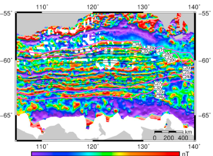
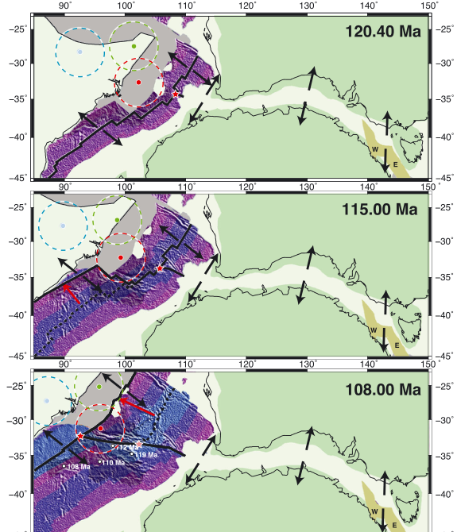
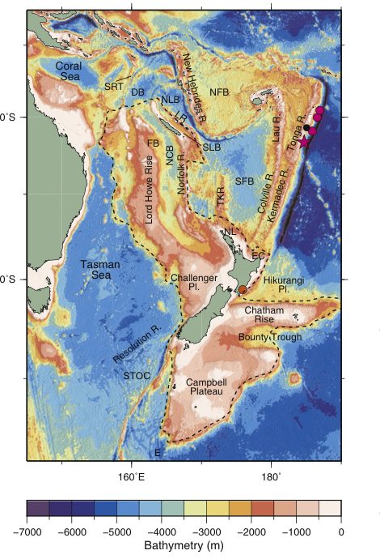
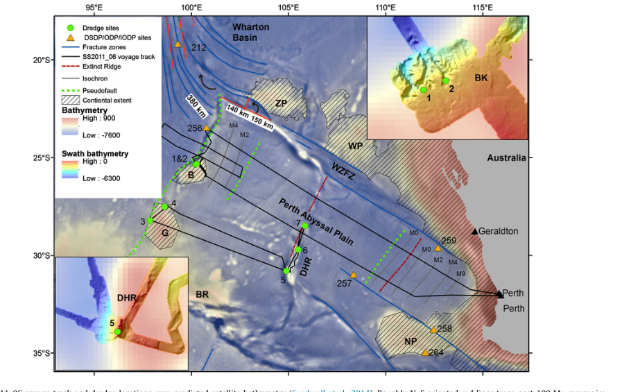

Williams et al. (2011, Tectonics) built the first full-fit, palinspastic reconstruction of the conjugate Australian-Antarctic margins, restoring the continental extension recorded in each margin's crustal thickness back to a single pre-rift configuration rather than simply matching present-day coastlines. Williams et al. (2018, Earth-Science Reviews), with Jacqui Halpin, then tested that fit against every other available line of evidence (magnetic anomalies, fracture zones, onshore geology) to work out where independent datasets agree, and where genuine disagreement remains. The magnetic anomaly grid below, over the conjugate margin at 40.1 Ma, is the kind of data a reconstruction like this has to satisfy: closely spaced, near-linear seafloor spreading anomalies that a good plate model should reproduce cleanly back through time.

Fig. 3, Williams et al. (2018).
Whittaker (2013, G-cubed) focused on the earliest, slowest phase of Australia-Antarctica spreading, resolving a long-standing conflict over how the Broken Ridge and Kerguelen Plateau large igneous provinces relate to the plate boundary that separated them. The three reconstructions below, at 120.4, 115 and 108 Ma, track the plate boundary, hotspot plume conduits and the migrating India-Australia-Antarctica triple junction through this early rifting phase.

Figure 4, Whittaker (2013).
Matthews et al. (2015, Earth-Science Reviews) turned to the southwest Pacific, reviewing geological and kinematic constraints on the plate boundaries that separated the Pacific plate, Zealandia and West Antarctica through the Late Cretaceous to mid-Eocene, and testing which of several published plate circuits linking the Pacific back to the Indo-Atlantic realm actually produce geologically plausible motion. The bathymetry map below shows the submerged continent of Zealandia and the surrounding ocean basins and plateaus at the heart of that reconstruction.

Fig. 1, Matthews et al. (2015).
Whittaker et al. (2016, EPSL) combined new 40Ar/39Ar ages and dredge samples with plate reconstructions to explain how the Batavia and Gulden Draak microcontinents came to be stranded in the Indian Ocean off Western Australia. Rather than the Kerguelen plume alone, they linked microcontinent calving to a ~105 Ma reorganisation of Indian plate motion, which reoriented spreading and left these slivers of continental crust behind. The map below shows the dredge sites and fracture zone geometry (including the curved Wallaby-Zenith Fracture Zone) that record that history.

Fig. 1, Whittaker et al. (2016).